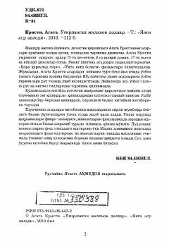

OMAgata Kristining mashhur detektiv hikoyalari jamlangan qiziqarli asar.
Mashhur ingliz yozuvchisi Agata Kristining ushbu kitobiga detektiv janridagi eng qiziqarli va sirli hikoyalaridan birlari kiritilgan. Asarda mashhur izquvar Puaro va uning do'sti Hastings ishtirokidagi murakkab jinoyatlar va ularning fosh etilishi hikoya qilinadi. Kitobxonni voqealar rivojining kutilmagan yechimlari va sirli jumboqlari o'ziga jalb qiladi.